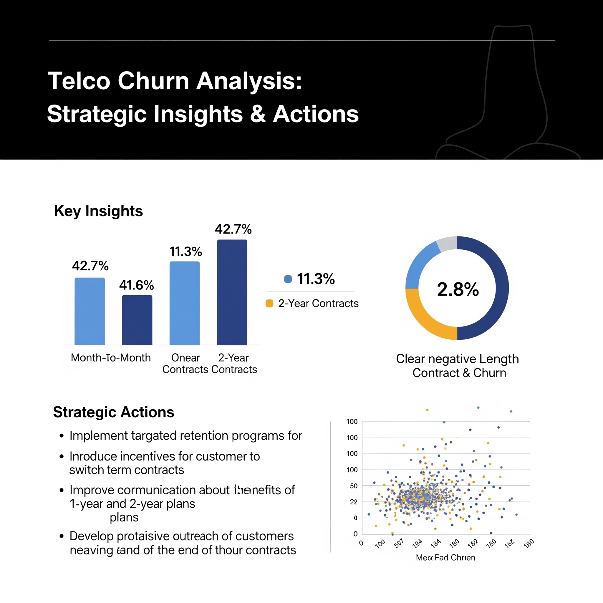
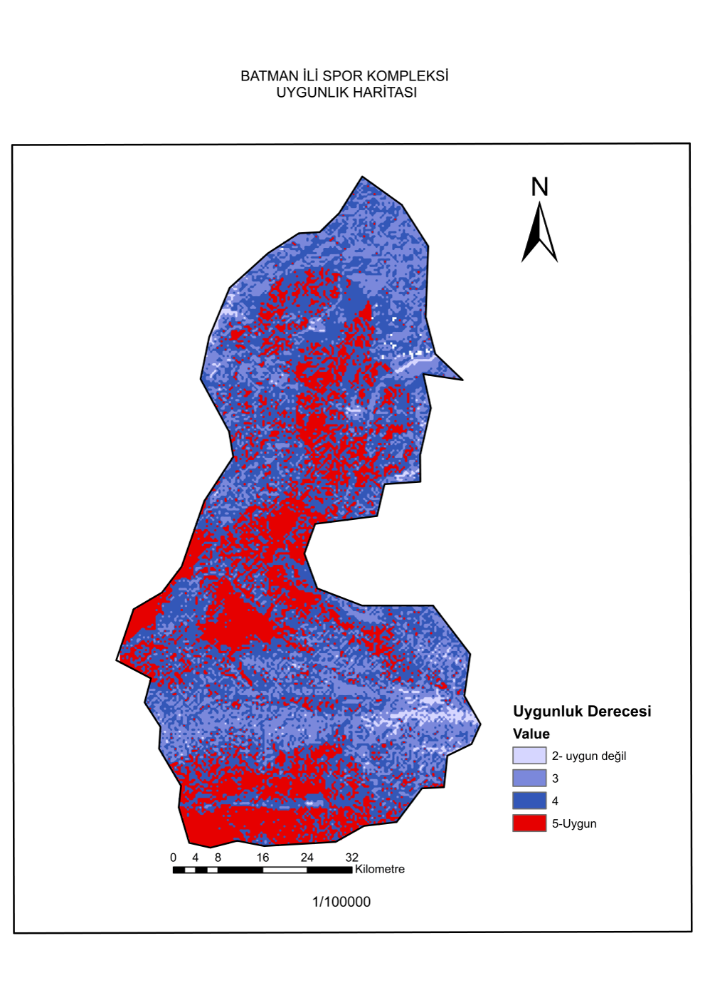
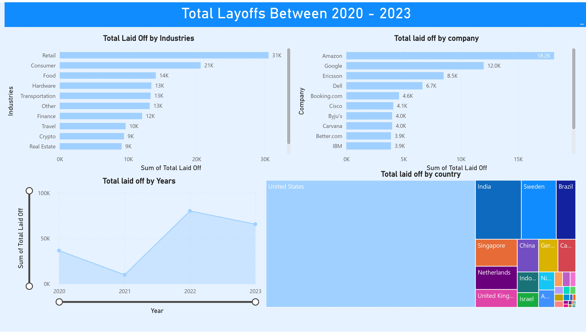

This project focuses on analyzing and predicting customer churn in
the telecom industry using Python and machine learning. By working
with a real-world dataset, I explored customer behavior through
extensive exploratory data analysis (EDA) and visualizations to
uncover patterns linked to customer attrition. Key features such
as contract type, monthly charges, tenure, and service
subscriptions were analyzed to identify their impact on churn. I
applied classification models — primarily Random Forest — to
predict the likelihood of churn and evaluated performance using
metrics like accuracy, precision, recall, and F1 score. In
addition to classification, a regression model was developed to
predict monthly charges, providing further business insights into
customer value. The overall objective is to help telecom
businesses detect at-risk customers early and implement effective
retention strategies.

Covid 19 Death Cases, Infected numbers and which location has the
more and least amount of Infected people. I used SQL queries to
show the total situation of Covid 19

Scrapping data from Amazon by using BeautifulSoup library of
Python The code scrapes product details (title and price) from an
Amazon page, logs the data to a CSV file daily, and optionally
sends an email alert if the price drops below a specified
threshold.

Batman province in the Southeastern Anatolia region close to the
city centre.1/100000 scale I46, I47, M46 and M47 sheets used as a
base map. After the sheets are merged and obtained as a single
raster data then with the help of the Georefencing menu of the
ArMap software by defining control points at grid points. Affin
transformed, error value tolerances under the UTM 6⁰ projection.
Project in UTM 6⁰ Projection It was studied in WGS84 datum and
37th zone. The project area covers the Batman province border.

This project focuses on the data cleaning process of layoff data from 2020 to 2023. The cleaned data is visualized using Power BI to provide insights into trends and patterns, such as the industries most affected by layoffs, the geographical distribution of layoffs, and the timeline of layoff events. These insights help identify key factors contributing to workforce reductions and inform strategies for mitigating future layoffs.